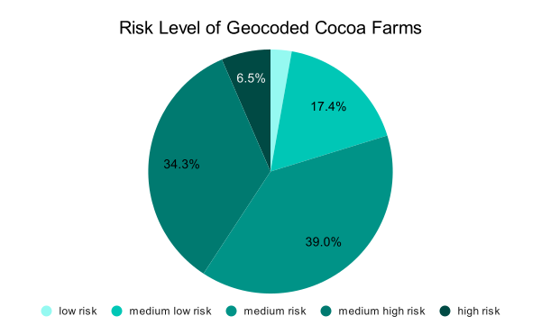
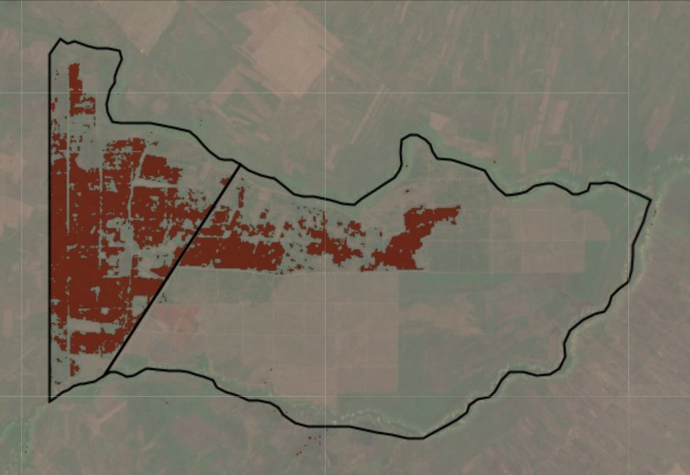
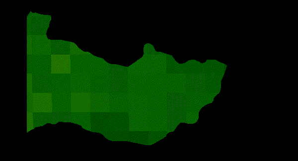

GIS Portfolio
My GIS portfolio showcases projects that transform complex spatial and environmental data into actionable insights and engaging visual stories. From assessing carbon sequestration in forested areas to mapping global freshwater systems and supporting community-driven initiatives, each project reflects my ability to integrate data analysis, systems thinking, and intuitive design. My work highlights a commitment to making data more accessible, empowering communities, and supporting evidence-based conservation and sustainability strategies.
Cocoa Deforestation Risk Assessment

The map explores Cocoa Deforestation Risk Assessment (DRA) on a reference cocoa dataset in Ghana. Using spatial analysis, the pie chart illustrates the proportion of geocoded cocoa farms by their risk level. Risk identification of future deforestation events linked to cocoa improves intervention priorities, supports farmers in high-risk areas, and prevent further forest loss before it occurs. This project aims to highlight public thematic layers and reference maps as a valuable asset. Buyers and processors can better understand supply patterns and connect more efficiently with producers, particularly in contexts where farms are fragmented.
Afforestation, Reforestation, and Revegetation (ARR)


This savannah Land Afforestation Project on the Batéké Plateaus north of Brazzaville aims to develop an alternative and renewable source of wood for urban use, based on the establishment of forest plantations adapted to these needs. Using remote sesnsing, I wanted to get a better understanding of NDVI use in ARR and REDD+ programs to monitor vegetation cover, detect forest loss or recovery, and support long-term MRV activities.
(Left) Supervised binary classification map of SPF2B, a part of the afforestation project. The area in red is classified as the plantations of Acacia auriculoformis. This map was generated using the latest MODIS imagery as of 19th February 2026, highlighting near real time as a relevant part for day to day project monitoring.
(Right) NDVI Animation of Acacia auriculoformis plantations. The map was made using MODIS data and runs from the project's planting period of 2018-2020. As plant health reflects how much GHG it can absorb, NDVI animation gives a perspective of the carbon dynamics involved with season and climate.
Thesis Project: CSPI in Utrecht
This thesis explores the Carbon Sequestration Potential Index (CSPI) (Pascual et al., 2021) in rural and urban areas using Google Earth Engine (GEE). The study focuses on quantifying carbon sequestration potential, crucial for forest management and conservation in the context of climate change. Through a detailed examination of variables such as Gross Primary Production (GPP), Aboveground Carbon Density (ACD), and Forest Cover (FC), the research investigates their contribution to the CSPI in the Utrecht Province. The map above displays the rural site of the study, Heuvelrug National Park. By switching out the shapefile in the code, the urban area, Utrecht Science Park can be displayed. GPP and ACD can be toggled on or off in the layers tab. This project had a specific aim to generate BSc-level teaching materials using open-source software for students.
Kalimantan fire
In my remote sensing project, I focused on the Village of Tumbang Nusa, situated within the Kahayan River Basin, using it as a case study mentioned in the book "Environmental Governance in Indonesia" (Nurhidayah et al., 2023). My primary interest was to explore how fire management, discussed in the book's chapter, could be visually represented through remote sensing. I specifically wanted to investigate the spatial distribution of fires, distinguish between urban and rural areas, and identify agricultural regions. To accomplish this, I utilized a false color layer and obtained data from the Fire Information for Resource Management System. I wanted to see the if there was any correlation between the distribution of fires and the distribution of urban areas, rural areas, and plantations. For the sake of visualisation, I wanted the real time fires to be visible, therefore I set the date of the image collection between 2018 to 2021. I chose the band combination Healthy Vegetation (B8A – B11 – B02). Using the false image layer there are instances where plantations appears to also be where fire hotspots are.
Global chloropleth map
The chloropleth map displays the annual net change rate of forest areas in 2020, providing data collected by the UN for SDG 15 (Life on Land). Chosen as the deadline for these goals, 2020 revealed that many countries did not achieve their targets. The map uses a diverging texture scale to assess the global situation, highlighting areas of forest area decrease (cross-hatching green) and forest area increase (solid green). It serves as a starting point to evaluate forest conservation efforts and the urgency for action.